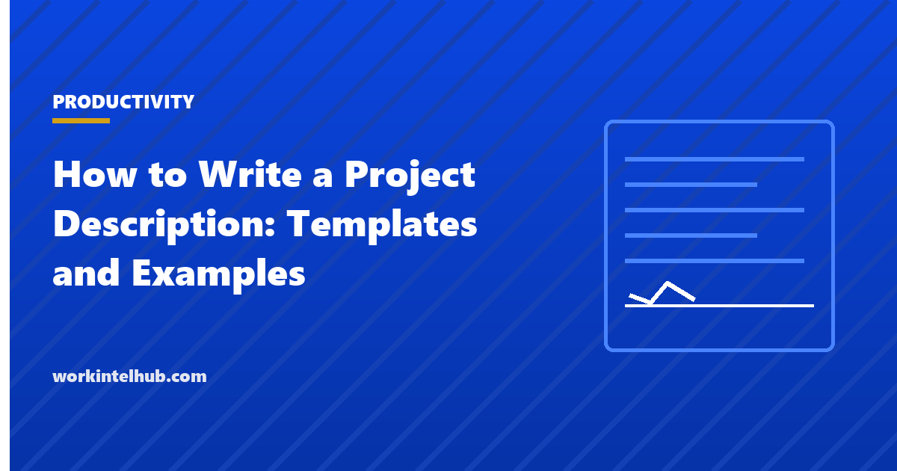

How to Write a Project Description: Templates and Examples

A project description is the one page that explains a project to someone who has not been in the meetings: what it is, why it is being done, what it will produce, when, for how much and by whom. It is the document a sponsor approves, a finance team budgets against and a new team member reads first. Written badly it is a paragraph of aspiration; written well it is seven short sections that answer the questions a sceptic would ask.
This guide sets out the seven elements, gives three worked examples of different sizes, lists the reasons descriptions get sent back, and provides a template in Word and PDF with an Excel version that holds descriptions for a portfolio of projects side by side.
Download the templates
Free files: Word, Excel and PDF
Three files, free, no email required. Word to edit, Excel to track, PDF to print or share.
Templates open in Microsoft Word, Excel, Google Docs and Sheets, LibreOffice and any PDF reader. Free to use and adapt for your organisation.
The seven elements
| Element | What it answers | Length |
|---|---|---|
| Purpose | Why are we doing this? What problem or opportunity? | Two sentences |
| Objectives | What will be different, by how much, by when? | Two to four bullets with numbers |
| Scope | What is in, and what is explicitly out? | Two short lists |
| Deliverables | What will exist at the end that does not exist now? | A list |
| Timeline | When does it start, what are the milestones, when does it end? | Three to six dates |
| Budget | What will it cost, in what categories, from where? | A total and three to five lines |
| Team and stakeholders | Who does it, who decides, who is affected? | Names and roles |
Three examples
Small internal project. Purpose: timesheet approval takes managers four hours a week and payroll is late one period in three. Objectives: cut approval time to under one hour a week by March 31; zero late payrolls from April. Scope: hourly staff in operations; excludes contractors. Deliverables: configured time tracking system, approval workflow, training for 14 managers. Timeline: configure by February 15, pilot to March 15, live April 1. Budget: $7,200 software year one, 60 hours of internal time. Team: HR lead (owner), payroll, one operations manager; sponsor COO.
Client deliverable. Purpose: the client's onboarding content is out of date and support tickets from new users are rising. Objectives: rewrite 40 help articles and 6 videos; reduce new-user tickets 30 percent within 60 days of launch. Scope: English only; the product tour is out of scope. Deliverables, timeline and budget follow in the same form, with the client's approver named under stakeholders.
Capital project. Purpose: the warehouse racking is at capacity and overflow stock is stored in a rented unit at $4,000 a month. Objectives: add 1,800 pallet positions by Q3; end the rental by October 1. Scope: Building B only; no changes to the picking system. Deliverables: engineered racking design, permits, installed and inspected racking. Timeline: design April, permit May, install August. Budget: $310,000 with a 10 percent contingency. The project charter develops a description of this size into the authorising document.
Why descriptions get sent back
- Objectives with no numbers. "Improve onboarding" cannot be approved or measured.
- Scope with no exclusions. If nothing is out, everything will be asked for.
- A timeline with one date. Sponsors want milestones they can check.
- A budget that is only a total, or a total with no source of funds.
- Stakeholders who are affected but not named, who then object late.
- Two pages where one would do. The extended version exists for the detail; the one-pager is what gets read.
From description to plan
A description is approved; a plan is executed. Once the description is signed, the deliverables become the work breakdown, the timeline becomes the schedule, the budget becomes the estimate and cost tracker, and the stakeholders become the communication plan. The project planning templates carry it from here.
Key takeaways
- A project description is seven elements on one page: purpose, objectives, scope, deliverables, timeline, budget, team.
- Objectives need numbers and dates; scope needs exclusions; the timeline needs milestones.
- Name everyone affected under stakeholders, or they object late.
- Keep the one-pager to one page; put detail in the extended version.
Frequently asked questions
What is a project description?
A short document, usually one page, that explains a project's purpose, objectives, scope, deliverables, timeline, budget and team so that a sponsor can approve it and a new team member can understand it. It precedes the charter and the plan.
How long should a project description be?
One page for approval and orientation. An extended version with background, success criteria, assumptions, constraints, risks and approach can run two to three pages and is used for larger or externally funded projects.
What is the difference between a project description and a project charter?
The description explains the project; the charter authorises it. A charter adds the sponsor's formal approval, the project manager's authority, decision rights and governance. Small projects often use the description as the charter.
How do I write project objectives?
As outcomes with a measure, a target and a date: "reduce new-user support tickets by 30 percent within 60 days of launch". Two to four objectives is enough; more than that is a list of tasks.
Should the budget be in the description?
Yes, at least as a total with major categories and the source of funds. A description without a budget cannot be approved, and one with only a total invites the question of where it came from.